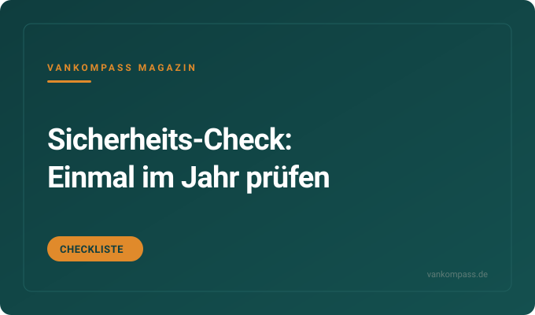

Ratgeber
Gasmelder, CO-Melder, Rauchmelder: Welche Melder in jeden Camper gehören
Was die drei Melder unterscheidet, wo sie hängen müssen und warum ein Kombigerät oft an der falschen Stelle sitzt.
Bereich
Welche Melder in jeden Camper gehören, wie du Türen und Fenster gegen Einbruch sicherst und was im Brandfall zählt. Ratgeber, Checklisten und eine Kaufempfehlung ohne Panikmache.
Drei Gefahren, drei Melder, drei verschiedene Montagehöhen: Dieser Beitrag erklärt, was Rauch-, Kohlenmonoxid- und Gasmelder jeweils erkennen, warum CO und Flüssiggas sich unterschiedlich im Raum verteilen und wo die Geräte deshalb hängen müssen. Du bekommst eine Einkaufsliste mit Preisspannen, Hinweise zu Batterie- und 12-Volt-Modellen und eine Antwort auf die Frage, ob Narkosegasmelder sinnvoll sind.
Erscheint in KürzeRedaktions-Tipp
Der Kohlenmonoxid-Warnmelder mit fest verbauter Langzeitbatterie, der ohne Verkabelung zehn Jahre im Camper hängt.
Warum wir es empfehlen: Standheizung, Gaskocher und Außengrill vor offener Tür sind die typischen CO-Quellen im Van, und das Gas ist geruchlos. Ein Melder dieser Klasse kostet weniger als eine Tankfüllung und braucht keinen Stromanschluss.
Preis-Rangeca. 30 bis 50 €Stand Oktober 2026
Bei Amazon ansehenAffiliate-Link *Preis bleibt für dich gleich.
Kostenlos als PDF
Strom, Schlafen, Küche, Sanitär, Sicherheit, Werkzeug. Zum Abhaken vor jeder Fahrt, damit du nie wieder ohne Ladekabel, Wasserschlauch oder Keil losfährst.
Was die drei Melder unterscheidet, wo sie hängen müssen und warum ein Kombigerät oft an der falschen Stelle sitzt.
Warum Fahrerhaustüren die Schwachstelle sind, welche Zusatzverriegelungen es gibt und was Einbau und Material kosten.
Pulver, Schaum oder Löschspray: Was im Van sinnvoll ist, was in Europa vorgeschrieben ist und wie oft geprüft wird.
Nachrüst-Alarmanlagen, Tracker mit SIM-Karte und Bluetooth-Tags im Vergleich: Kosten, Stromverbrauch, Grenzen.
Woran du einen guten Stellplatz erkennst, welche Regeln in Europa gelten und was du nachts griffbereit haben solltest.

Gasprüfung, Melderbatterien, Feuerlöscher, Reifenalter, Verbandkasten und Gurte: Der Jahrescheck zum Abhaken.
Die Fragen, die am häufigsten gesucht werden. Ausführlich beantwortet, mit Zahlen, Rechenwegen und den Fehlern, die du dir sparen kannst.
Im Wohnmobil braucht man mindestens einen Rauchmelder und einen Kohlenmonoxid-Melder. Wer mit Flüssiggas kocht oder heizt, ergänzt einen Gasmelder für Propan und Butan. Alle drei zusammen kosten ca. 60 bis 120 Euro, eine der günstigsten Sicherheitsmaßnahmen überhaupt.
Die Melder hängen an verschiedenen Stellen, weil die Gase sich unterschiedlich verhalten. Rauch steigt, also gehört der Rauchmelder an die Decke, möglichst weit weg von der Kochstelle, sonst löst er bei jedem Spiegelei aus. Kohlenmonoxid ist etwa so schwer wie Luft und verteilt sich im Raum, der Melder sitzt auf Kopfhöhe im Schlafbereich oder in der Nähe der Heizung. Flüssiggas ist schwerer als Luft und sammelt sich am Boden, deshalb gehört der Gasmelder etwa 10 bis 30 Zentimeter über dem Boden in Nähe von Kocher oder Gaskasten.
Typischer Fehler: ein Kombigerät kaufen und an die Decke schrauben, wo es Gas nicht erkennt. Batterien jährlich prüfen, Testknopf monatlich drücken, Melder nach zehn Jahren tauschen. Zum Ratgeber Melder im Camper
Ein Camper wird gegen Einbruch gesichert, indem die Schwachstellen mechanisch nachgerüstet werden: Zusatzschlösser an Fahrerhaus- und Schiebetür, Sicherungen an Hecktüren und Fenstern, dazu sichtbare Abschreckung wie Alarm-Aufkleber und Innenbeleuchtung. Elektronische Alarmanlagen und Tracker ergänzen, ersetzen aber keine Mechanik.
Bei Kastenwagen auf Ducato-Basis sind die Fahrerhaustüren die bekannte Schwachstelle. Zusatzverriegelungen, die von innen und außen bedient werden, kosten ca. 100 bis 250 Euro pro Türpaar und sind in ein bis zwei Stunden montiert. Für Schiebe- und Hecktüren gibt es Bügelschlösser und Riegel ab ca. 30 Euro. Ausstellfenster lassen sich mit Zusatzriegeln sichern. Alarmanlagen zum Nachrüsten kosten ca. 150 bis 500 Euro plus Einbau, GPS-Tracker ca. 30 bis 150 Euro plus SIM-Kosten.
Oft vergessen: Wertsachen gehören nicht sichtbar ins Fahrerhaus, auch nicht für zehn Minuten am Supermarkt. Ein kleiner Tresor, fest verschraubt, nimmt Pässe, Bargeld und Laptop auf. Und wer frei steht, parkt so, dass die Schiebetür zur Straße oder zu anderen Fahrzeugen zeigt. Zum Vergleich Einbruchschutz am Kastenwagen
In Deutschland ist ein Feuerlöscher im Wohnmobil nicht vorgeschrieben, in einigen europäischen Ländern wie Belgien, Griechenland oder Polen dagegen schon. Unabhängig von der Vorschrift gehört ein Löscher mit 2 Kilogramm oder ein Löschspray in jeden Camper, weil Gas, Strom und Holzmöbel auf engstem Raum zusammenkommen.
Pulverlöscher mit 2 Kilogramm kosten ca. 20 bis 40 Euro, löschen fast alles, hinterlassen aber Staub, der Elektronik und Polster ruiniert. Schaumlöscher sind sauberer, aber nicht für Gasbrände und oft größer. Löschsprays ab ca. 20 Euro sind handlich und einfach zu bedienen, reichen aber nur für Entstehungsbrände. Eine Löschdecke für ca. 10 bis 20 Euro deckt Pfannenbrände am Kocher ab. Vorgeschriebene Löscher müssen in manchen Ländern eine gültige Prüfplakette tragen.
Praxis: Der Löscher gehört griffbereit zwischen Schlafplatz und Ausgang, nicht hinten in der Garage unter dem Gepäck. Und einmal den Sicherungsstift ansehen, damit es im Ernstfall nicht das erste Mal ist. Zum Ratgeber Feuerlöscher im Camper
Eine Alarmanlage im Camper bringt etwas, wenn sie Diebe abschreckt, bevor sie anfangen, und dich nachts weckt, wenn jemand an der Tür ist. Gegen entschlossene Profis schützt sie nicht, gegen Gelegenheitstäter und Zugriff im Schlaf schon. Mechanische Schlösser bleiben die Grundlage.
Nachrüst-Alarmanlagen mit Türkontakten, Innenraumüberwachung und Sirene kosten ca. 150 bis 500 Euro, mit Einbau oft 300 bis 800 Euro. Sie ziehen im Betrieb wenig Strom, aber bei längerer Standzeit belastet jede Dauerlast die Batterie. Modelle mit Gassensor warnen zusätzlich vor Narkosegas, wobei solche Überfälle deutlich seltener sind, als es Foren vermuten lassen. Serien-Camper wie VW California oder Marco Polo haben ab Werk oft eine Diebstahlwarnanlage, die sich im Schlafmodus teilweise abschalten lässt.
Wichtig: Aufkleber und blinkende LED sichtbar anbringen, denn Abschreckung ist der eigentliche Nutzen. Die Anlage so einstellen, dass Haustier oder Wind an der Markise keinen Fehlalarm auslösen, sonst schaltet man sie nach einer Woche ab. Zum Vergleich Alarmanlage und GPS-Tracker
Der CO-Melder hängt im Wohnmobil auf Kopfhöhe im Schlafbereich oder etwa ein bis drei Meter von der Heizung entfernt, nicht direkt über der Kochstelle und nicht in Ecken ohne Luftbewegung. Deckenmontage ist bei CO möglich, Bodennähe dagegen falsch.
Kohlenmonoxid hat fast die gleiche Dichte wie Luft und verteilt sich mit der Raumluft, steigt aber mit warmer Abluft leicht nach oben. Deshalb empfehlen Hersteller eine Montage zwischen Kopfhöhe und Decke, mit Abstand zu Fenstern, Lüftern und Türen, wo Zugluft die Messung verfälscht. Im Camper ist der Schlafbereich entscheidend, weil die Gefahr nachts bei laufender Standheizung oder einem Gaskocher am größten ist. Melder mit Display zeigen auch niedrige Konzentrationen, bevor der Alarm auslöst.
Typische Fehler: Melder im Fach verstauen, weil er stört, oder Batterie nach einem Fehlalarm entfernen. Besser monatlich testen und das Herstellungsdatum notieren, denn die Sensoren altern und werden nach etwa sieben bis zehn Jahren getauscht. Ein zweiter Melder lohnt sich bei getrennten Schlafbereichen wie Aufstelldach und Unterbett.
Die Gasprüfung im Wohnmobil wird alle zwei Jahre empfohlen und kostet ca. 30 bis 80 Euro. In Deutschland ist sie seit einigen Jahren nicht mehr Voraussetzung für die Hauptuntersuchung, viele Campingplätze, Versicherer und Fähren verlangen aber weiterhin eine gültige Prüfbescheinigung.
Geprüft werden Gasflaschenkasten, Schläuche, Druckregler, Leitungen, Verbraucher und die Dichtheit der gesamten Anlage. Schläuche haben ein aufgedrucktes Herstellungsdatum und sollten nach zehn Jahren getauscht werden, Druckregler ebenfalls. Die Prüfung macht ein zugelassener Sachkundiger, oft in Wohnmobil-Werkstätten oder beim Händler, und dauert etwa eine halbe Stunde. Bei Kastenwagen mit Gaskocher und Gasheizung sind alle Komponenten betroffen, bei Vans mit Kartuschenkocher entfällt die Prüfung.
Oft vergessen: Nach eigenen Umbauten oder dem Tausch von Geräten die Anlage neu prüfen lassen. Flaschen immer stehend transportieren, Ventil während der Fahrt schließen, sofern keine Crash-Sensor-Regler verbaut sind. Und ein Lecksuchspray für ca. 10 Euro im Bordwerkzeug zeigt undichte Verschraubungen sofort. Zur Sicherheits-Checkliste für den Camper
Sicher übernachten kannst du auf Campingplätzen, offiziellen Stellplätzen und ruhigen, aber nicht völlig abgelegenen Orten mit etwas Durchgangsverkehr. Meide Parkplätze an Autobahnen, Strandparkplätze in Touristenhochburgen und Plätze, an denen Glasscherben oder Müll auf regelmäßige nächtliche Besucher hinweisen.
Die Regeln unterscheiden sich in Europa: In Deutschland ist eine Nacht zur Wiederherstellung der Fahrtüchtigkeit erlaubt, in Skandinavien gilt das Jedermannsrecht mit Einschränkungen, in Kroatien, Portugal und Teilen Spaniens drohen Bußgelder beim Freistehen. Apps und Stellplatzführer zeigen bewertete Plätze, aktuelle Kommentare sind oft aussagekräftiger als Sterne. Die Nähe zu Wohnhäusern oder einem Hof mit Licht senkt das Risiko eher, als dass sie es erhöht.
Praxis: Vor dem Dunkelwerden ankommen, Umgebung einmal zu Fuß ansehen, Fahrzeug fahrbereit abstellen und Schlüssel griffbereit legen. Wer sich unwohl fühlt, fährt weiter, auch um Mitternacht. Das Bauchgefühl ist das beste Sicherheitssystem im Camper. Zum Praxisbeitrag Sicher frei stehen
Noch nicht geholt?
120 Punkte nach Bereichen sortiert. Dazu neue Video-Tests und Ratgeber, sobald sie online sind.
Powerstations, Bordbatterien, Ladebooster, Verbrauch.
›Faltpanels, Dachmodule, Laderegler, Ertrag, Montage.
›Matratzen, Topper, Froli, Aufstelldach, Kälte von unten.
›Campingtoilette, Trenntoilette, Dusche, Entsorgung, Hygiene.
›Kühlbox, Kocher, Induktion, Geschirr, Stromverbrauch.
›Frischwasser, Tankhygiene, Filter, Pumpen, Winterfest.
›